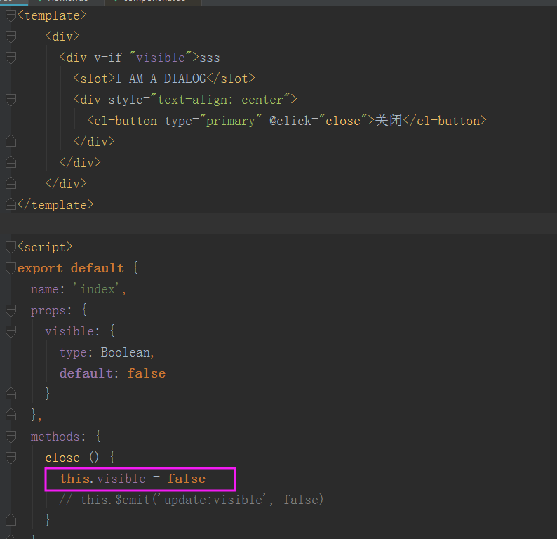
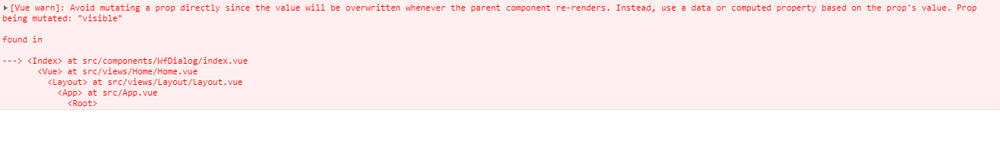
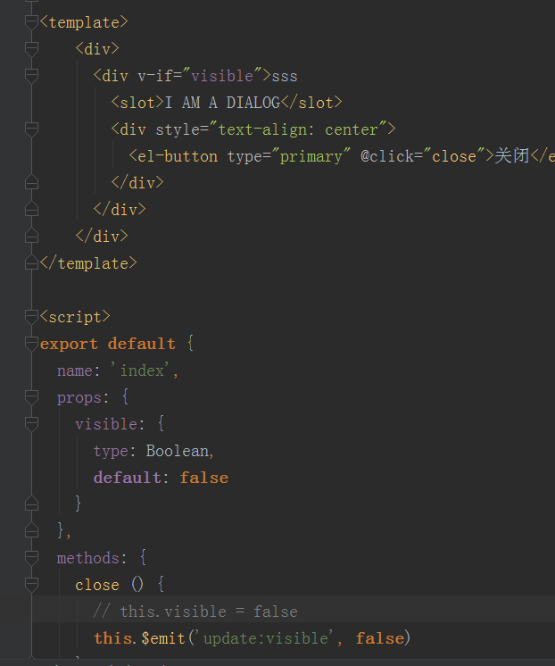

首先，笔者在使用element-ui 中的dialog组件时，发现visible属性在使用时需要添加.sync才生效，心中好奇，所以研究一下原理
我们先自己创建一个dialog组件，如下

当我们点击关闭按钮时，会发生警告

原因就是在VUE中，prop的传递是单向下行绑定的，也就是说只能父传给子，不能反过来。
虽然在demo中子组件直接修改visible也能够关闭窗口，但是该变量不能传给父组件，所以并不建议这么做，（如果您任性，觉得父组件拿到这个变量也没用，那您尽管在子组件中修改，但是小心父组件的入参变化时会覆盖你的修改）
现在思考，如果我们将子组件的变化告诉父组件，让父组件帮我们实现是否可行。也就是说我们操作子组件后通知父组件去关闭窗口，答案是可以的
在VUE中，子组件向父组件通信是通过事件完成的，this.$emit
我们点击子组件关闭按钮时，调用一下父组件的更新事件，让父组件在这个更新事件中改变visible这个变量，就可以实现子组件关闭了
.sync这个指令实际上是一个语法糖，在visible属性变化时会调用父组件的update:visible事件，我们将上面的demo修改如下

在使用该组件时，使用sync与法糖
该语法糖会扩展为
这样一来，visible就实现了父子同步，父组件初始化visible，子组件调用关闭事件，触发父组件update事件，父组件在update事件中更新visible变量，改变子组件可见的状态
我们在实现双向绑定时经常使用v-modal,这里看来，使用.sync也是可以的，不同在于v-modal触发的是父组件的input事件，.sync触发的是父组件的update事件